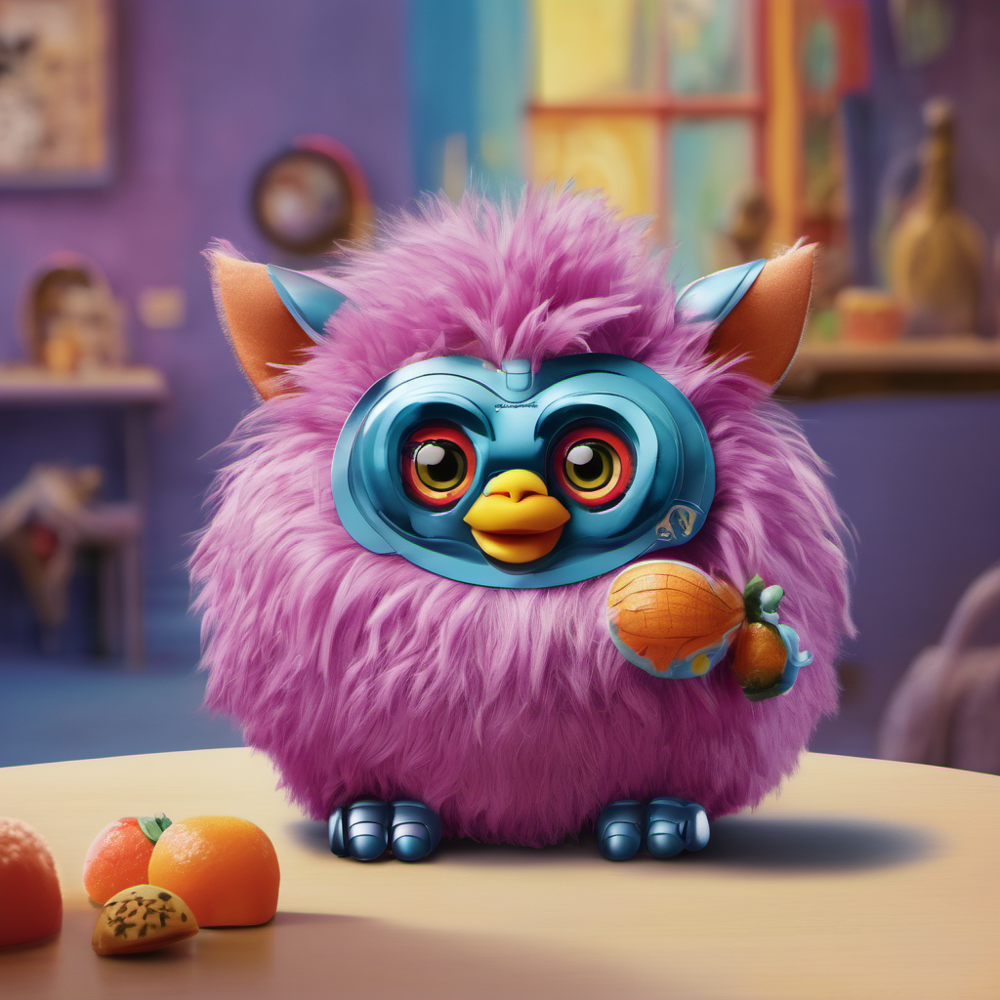
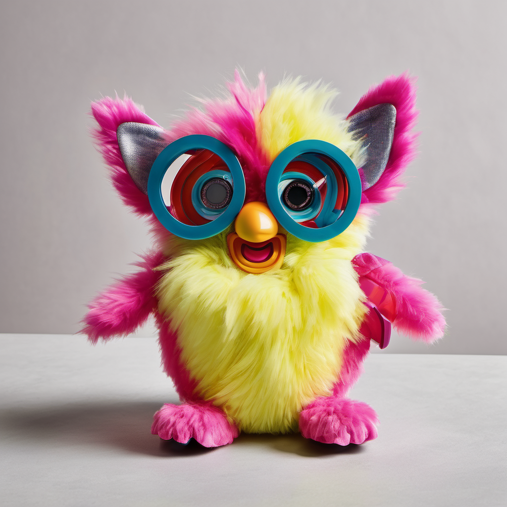
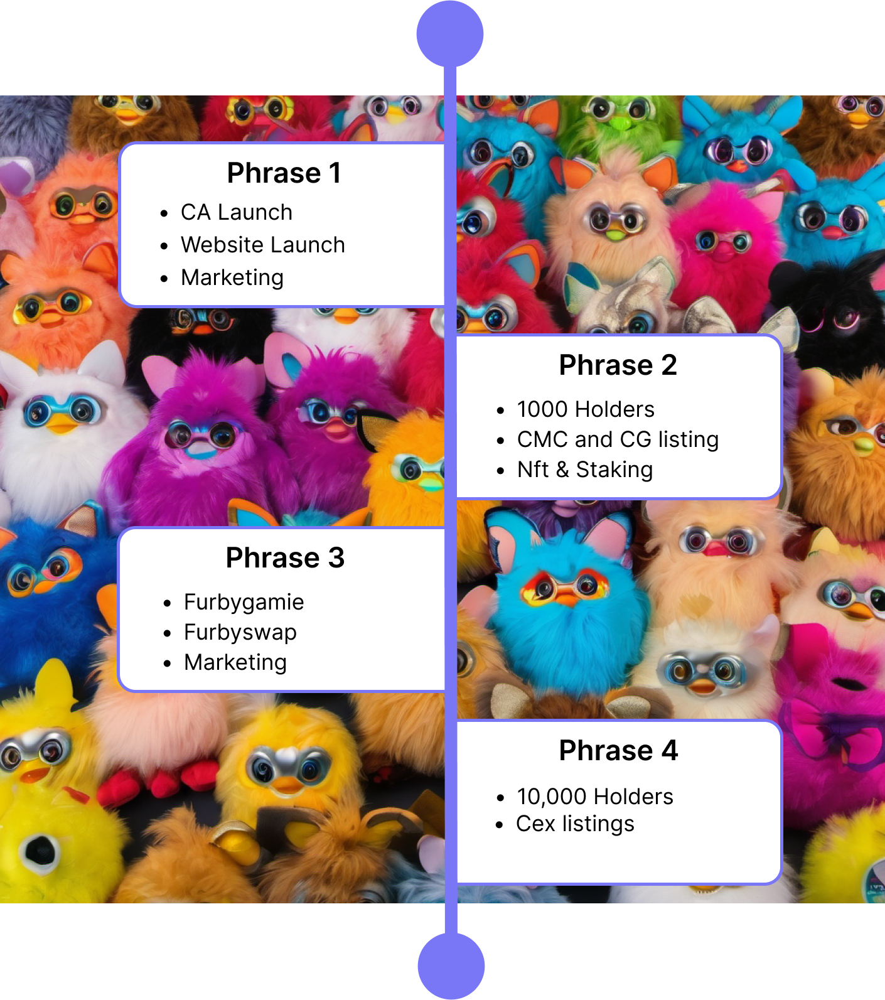
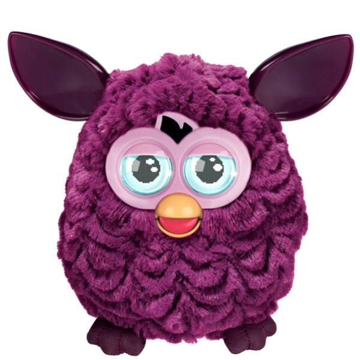
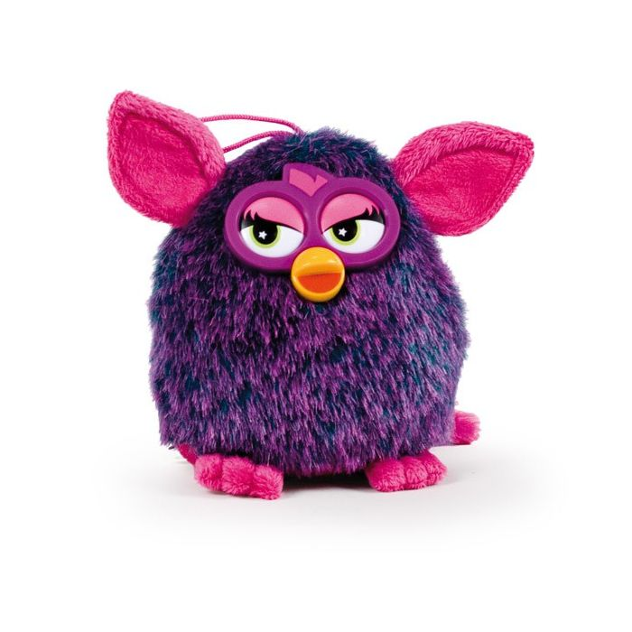

FurbyCoin - $Fur
Contract Adddress: BwLSwohtYqeANyXUQWPmhmkcJrvnXMQtDHaP7AHSRn27
FURBYnomics -
Name: Furby
Symbol: Fur
Circulating supply: 979,000,000,000
Total Supply: 1,000,000,000,000
Initial burned: 21,000,000,000
Tax: 0%
Nft Market

ID - FB01A | SOL - 8.9

ID - FB02B | SOL - 12.1
ID - FB01A | SOL - 9.3
ID - FB04D | SOL - 3.1
Roadmap
How To buy
Step 1: Create A Wallet
Download and create a Phantom Wallet or your wallet of choice from the app store or google play store for free. Desktop users, download the google chrome extension by going to PHANTOM. There are over 20+ Wallets that can be used.
Step 2: Get Some Solana
You need Solana (SOL) in your wallet to switch to $Fur. If you don’t have any SOL you can buy directly on Phantom , transfer from another wallet, or buy on another exchange and send it to your wallet.
Step 3: Go to Raydium
Click Launch App and connect to Wallet on the top right. Find your wallet icon and connect wallet.
Step 4: Switch SOL for $Fur
Inside the Raydium SWAP you will need to SWAP FROM SOL TO $Fur. Click the Icon under the word ‘to’ and Paste the $Fur token address in the search name or mint address box.
Contract Address: BwLSwohtYqeANyXUQWPmhmkcJrvnXMQtDHaP7AHSRn27Step 5: SWAP
Enter the amount of SOL you want to swap for $Furby and click SWAP. We have ZERO taxes so you don’t need to worry about buying with a specific slippage, although you may need to use slippage during times of market volatility.

